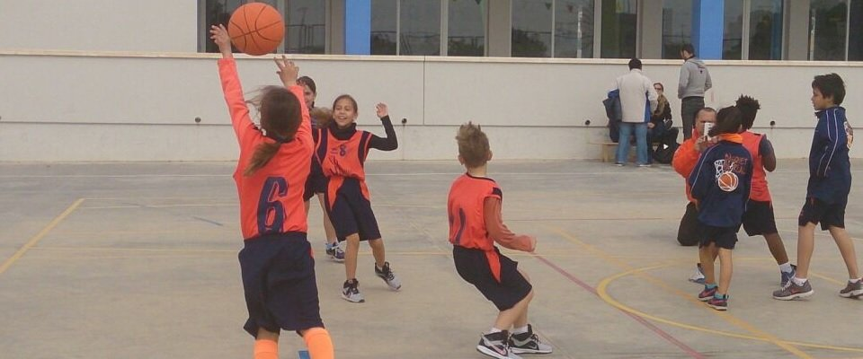
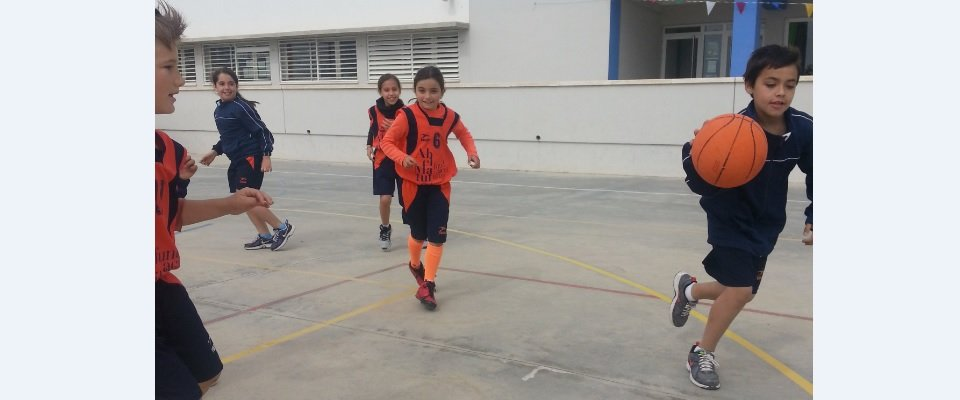

El Baloncesto es un deporte que nos brinda una condición física perfecta, una visión periférica increíble, buena salud y nos enseña disciplina, porque los atletas deben de cumplir con el plan técnico táctico orientado por los entrenadores; asimismo, deben relacionarse con sus compañeros de equipo y respetar las normas de conducta dictadas.
El baloncesto fue constituido como federación, en Guatemala, el 7 de septiembre de 1946.
En este deporte puedes explotar tu energía y jugar en equipo, tenemos buenas instalaciones con horario flexible para poder practicarlo.
